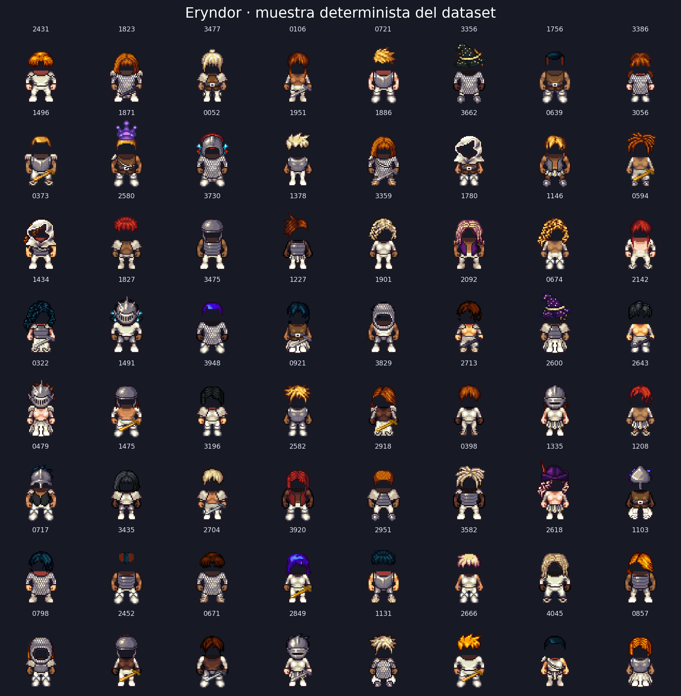
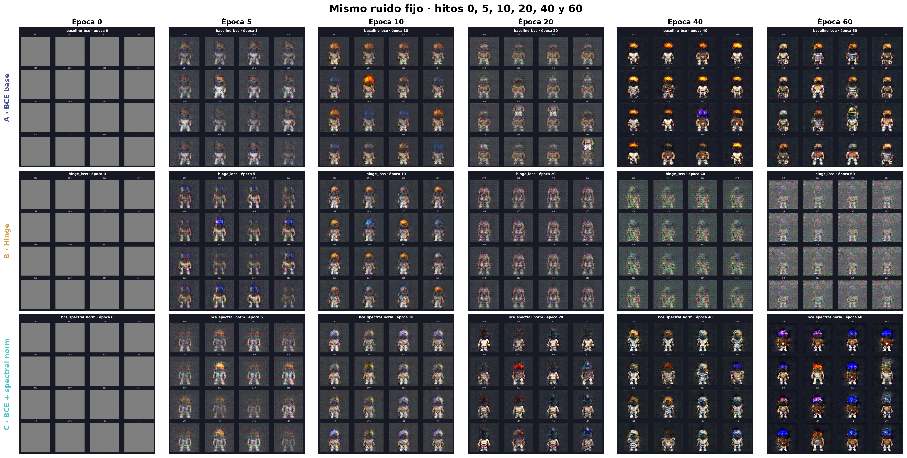
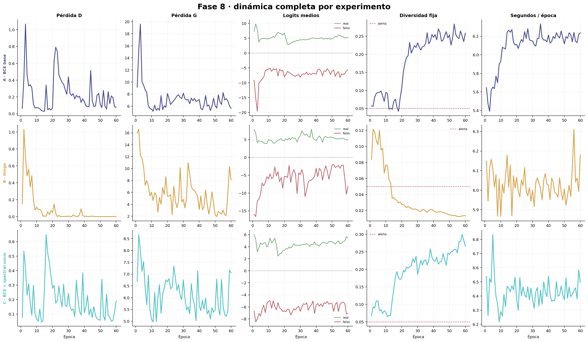
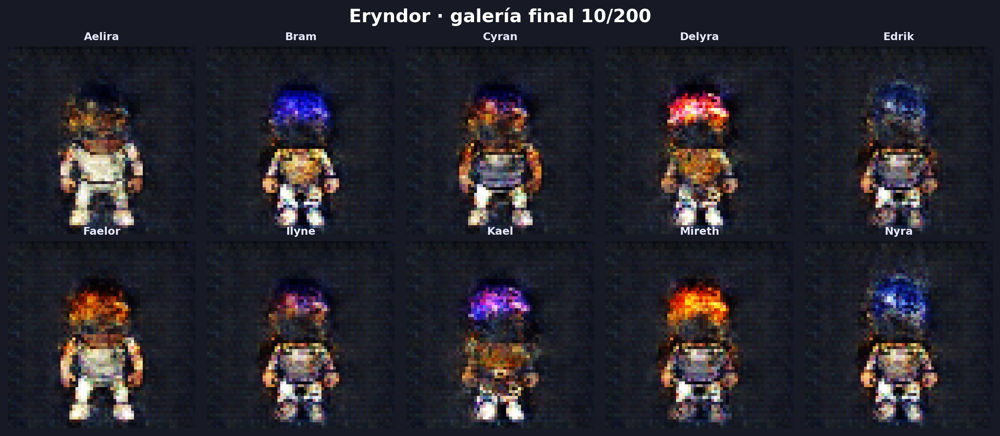
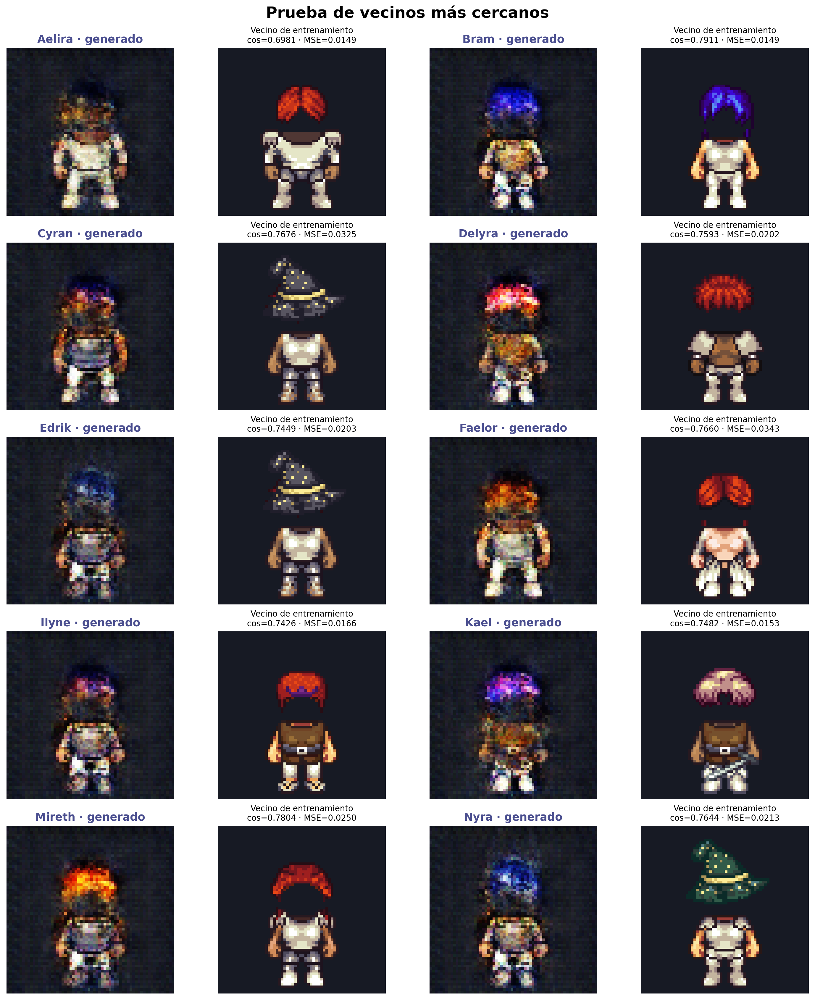

Generador G
128 → 512 → 256 → 128 → 64 → 3
Cinco convoluciones transpuestas. BatchNorm y ReLU internamente; tanh en RGB.
Deep Learning 2026 / Proyecto 2
Diseño generativo de personajes para un RPG pixel art de aventura y magia.
La vara visual
Eryndor quedó dividido por la Ruptura Celeste. Sus guardianes exploran ruinas, recuperan reliquias y contienen grietas arcanas.

Muestra determinista; composición por capas con semilla 2026.
Liberated Pixel Cup
Licencias por capa: CC0, CC-BY, CC-BY-SA, OGA-BY y GPL.
DCGAN 64 × 64
128 → 512 → 256 → 128 → 64 → 3
Cinco convoluciones transpuestas. BatchNorm y ReLU internamente; tanh en RGB.
3 → 64 → 128 → 256 → 512 → 1
Cinco convoluciones. LeakyReLU 0.2; BatchNorm desde el segundo bloque; salida en logits.
2,765,568 parámetrosAdam · lr 2×10⁻⁴ · β=(0.5, 0.999) · batch 64 · semilla 42 · 60 épocas
Protocolo pre-registrado
Control. Esperamos siluetas reconocibles por la consistencia del corpus.
Cambia únicamente la pérdida. Esperamos gradientes útiles y mejor diversidad.
Cambia únicamente la estabilización. Esperamos limitar periodos de dominio.


Fallos y controles
Un resultado que no mejora también es válido si el control y el análisis son honestos.
Resultado principal
El entrenamiento terminó y C fue seleccionado provisionalmente. Su checkpoint está disponible; falta descargar ResNet18 y auditar 200 candidatos.

Los diez PNG conservan vector z, semilla, hash, vecino y métricas.
Evidencia 3
ResNet18, similitud coseno, MSE y la figura lado a lado están implementados. Faltan diez imágenes GAN válidas.
Tasa declarada:

Alcance actual
Reflexión pendiente: se responderá al identificar el personaje más cercano a una imagen real.
Guía de calificación
Goodfellow et al. (2014) · Universal LPC Character Generator · LPC Style Guide · IA declarada en README